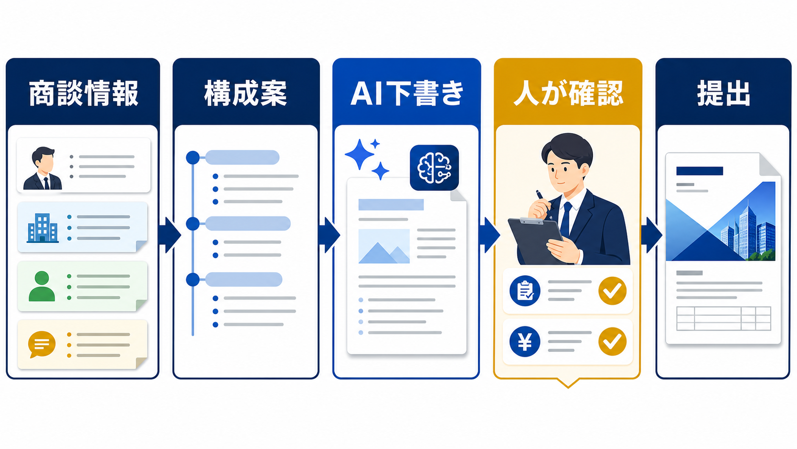

SALES / PROPOSAL WORKFLOW
提案書をAIで作成する方法｜営業の下書きと確認を分ける
提案書作成でAIを使うなら、顧客理解と責任ある判断を残しながら、情報整理と下書きを短くするのが基本です。営業担当者の経験を置き換えるのではなく、確認しやすい原稿へ整えます。

提案書作成は、AIと人の担当を分ける
提案書の全工程を一つの指示で自動化すると、どの情報が根拠で、どこが推測か分かりにくくなります。IPAはAI活用のパターンとして文書作成・確認を挙げていますが、営業で使うときは顧客固有の事実と社内の承認を分けて設計します。
| 工程 | AIの補助 | 人が持つ判断 |
|---|---|---|
| 情報整理 | 商談メモの分類・要約 | 事実と推測の区別 |
| 構成 | 課題・提案・効果の並び替え | 顧客に合う優先順位 |
| 下書き | 文章、見出し、比較表の草案 | 自社の提供範囲と表現 |
| 確認 | 表記ゆれ・抜けの候補出し | 金額、納期、契約、約束 |
| 提出 | 送付文の下書き | 最終承認と送信 |
AIへ渡す前に、商談情報を事実と仮説へ分ける
AIの出力品質は、入力する情報の整理に左右されます。顧客が発言した事実、営業が考えた仮説、自社で確認が必要な項目を分けます。特に、予算、導入時期、対象人数、既存システム、決裁者などは、空欄のまま推測で埋めないことが重要です。
事実
顧客が話した課題、条件、期限。
仮説
営業が考える原因や提案の方向。
確認事項
次回商談や社内承認で確かめる内容。
顧客名、個人情報、未公開の契約情報を入力する場合は、サービス条件と社内ルールを確認します。入力データの分類はAI導入のリスク、利用可否は生成AIの社内利用ルールに戻して判断します。
構成案を先に作り、文章は後から整える
いきなり完成原稿を作るより、「顧客の課題 → 放置した場合の影響 → 提案する方法 → 導入の進め方 → 費用・条件 → 次の確認」の構成を先に置きます。構成が顧客の意思決定順になっているかを営業担当者が確認してから、AIに下書きを依頼します。
AIへの指示には、対象読者、提案の目的、使ってよい情報、書いてはいけない情報、出力形式を含めます。「実績を追加する」ではなく「確認できない実績は書かない」と明記すると、根拠のない表現を減らせます。
提出前は、数字・条件・顧客固有性を確認する
提案書の確認は、誤字脱字だけでは足りません。顧客の現状と提案内容が対応しているか、事実の根拠があるか、契約や価格の条件と一致しているかを見ます。AIが整えた文章ほど自然に読めるため、確認項目を固定する方が安全です。
- 顧客課題：実際の発言や資料と一致しているか。
- 提案範囲：自社が提供できるものだけになっているか。
- 数字：金額、期間、人数、削減時間に根拠があるか。
- 表現：効果保証、誇張、誤解を招く比較がないか。
- 次の行動：誰がいつ何を確認するか明確か。
よい提案書の型をチームで再利用する
提案書を毎回ゼロから作るのではなく、構成、確認表、表現の注意点をチームの型として残します。案件ごとの個別情報をテンプレートへ混ぜないよう、共通部分と案件固有部分を分けます。提出後の修正理由も記録すると、次の下書きの精度を上げられます。
| 共通テンプレート | 案件ごとの情報 | 再利用する学び |
|---|---|---|
| 課題・提案・効果の構成 | 顧客の課題と条件 | よくある質問と反論 |
| 数字の確認項目 | 見積・納期・体制 | 差し戻し理由 |
| 提出前チェック | 承認者・送付先 | 採用された表現 |
提案書をAIで作成する前のチェック
AIを使うか迷ったときは、提案書が定型化しやすい部分と、顧客固有の判断を分けます。次の項目が決まっていない案件は、まず営業担当者の整理から始めます。
- 提案の目的と読者が決まっているか
- 事実、仮説、未確認事項を分けているか
- 入力してよい顧客情報の範囲が明確か
- 金額、納期、実績を確認する担当者がいるか
- 提出前にAI出力を修正した履歴を残せるか
- IPA「AIの利活用、AIによるDXの推進」（2026-07-13確認）
- 経済産業省「コンテンツ制作のための生成AI利活用ガイドブック」（2026-07-13確認）
- 経済産業省「AI事業者ガイドライン」（2026-07-13確認）
よくある質問
提案書の文章だけAIに整えてもらえますか？
可能です。ただし、顧客名や未公開情報を含める前に入力条件を確認します。文章を自然にするだけでなく、数字、表現、提案範囲を営業担当者が確認し、提出前の承認を残します。
AIが作った提案書の実績を使ってもよいですか？
自社で確認できる実績だけを使います。対象期間、顧客の許諾、数値の定義が不明な実績は掲載しません。想定例やサンプルは、実績と混ざらないように明記します。
提案書を毎回同じ構成にすると画一的になりませんか？
共通化するのは構成と確認項目で、顧客課題への接続は案件ごとに変えます。土台をそろえると、営業担当者は顧客理解と判断に時間を使いやすくなります。